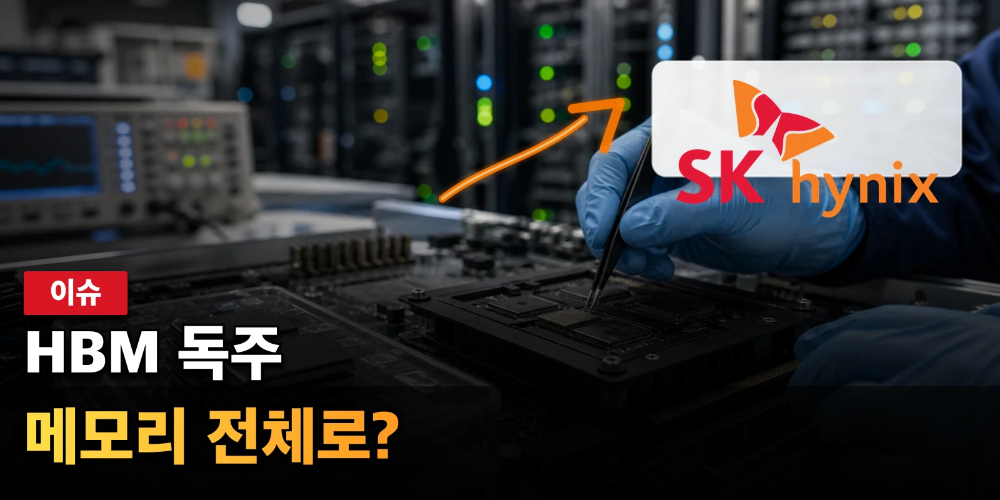

SK하이닉스은 AI 메모리 대표 종목로 분류되지만, 지금 시장이 묻는 질문은 이름값 하나로 끝나지 않습니다. SK하이닉스 주식의 핵심은 HBM 선도 기대가 DRAM, NAND, 설비투자 부담까지 감당할 만큼 넓은 이익으로 확산되는지입니다. 거래대금이 몰릴 때는 가격 반응보다 어떤 정보가 새로 들어왔고 어떤 기대가 이미 반영되어 있었는지를 먼저 나누어야 합니다.
여기서 필요한 태도는 매수·매도 결론보다 SK하이닉스을 읽는 순서를 정리합니다. 이 글은 수익률을 약속하지 않으며, 회사와 네트워크가 실제로 증명해야 할 숫자와 남아 있는 부담을 독자가 직접 점검할 수 있도록 돕는 정보형 분석입니다.
HBM 프리미엄의 두 얼굴

장면을 좁혀 보면 AI 가속기 고객과의 장기 공급 관계가 높은 단가와 이익률을 만들어 내는 구간입니다. SK하이닉스에 대한 시장의 기대는 이 장면이 단순한 뉴스가 아니라 반복 가능한 매출, 사용량, 비용 절감, 혹은 신뢰 회복으로 이어질 때 더 오래 유지됩니다. 같은 headline이라도 일회성 이벤트인지 구조 변화인지에 따라 주가와 코인 가격의 의미가 달라집니다.
따라서 살펴볼 지표는 제품 세대별 HBM 비중, 고객별 물량, 계약 가격 구조, HBM4 전환 일정입니다. 이 지표들은 한 줄로 끝나는 숫자가 아니라 서로 맞물려 움직입니다. 예를 들어 거래대금이 늘어도 수익성, 현금흐름, 고객 승인, 온체인 사용, 규제 조건 중 어느 하나가 따라오지 않으면 기대는 오래 버티기 어렵습니다.
반대로 조심할 부분은 고객 집중도가 높아 작은 일정 변화에도 기대가 흔들릴 수 있다는 점입니다. 그래서 SK하이닉스을 다룰 때는 긍정적 발표와 부담 요인을 같은 문단 안에 두어야 합니다. 독자가 필요한 것은 방향을 단정하는 문장이 아니라 다음 실적, 공시, 온체인 데이터, 상품 흐름에서 무엇을 확인해야 하는지입니다.
공급 부족의 계산서
장면을 좁혀 보면 AI 메모리 부족이 가격 협상력과 선제 투자 부담을 동시에 키우는 상황입니다. SK하이닉스에 대한 시장의 기대는 이 장면이 단순한 뉴스가 아니라 반복 가능한 매출, 사용량, 비용 절감, 혹은 신뢰 회복으로 이어질 때 더 오래 유지됩니다. 같은 headline이라도 일회성 이벤트인지 구조 변화인지에 따라 주가와 코인 가격의 의미가 달라집니다.
따라서 살펴볼 지표는 설비투자, 후공정 능력, EUV 장비 확보, 감가상각비입니다. 이 지표들은 한 줄로 끝나는 숫자가 아니라 서로 맞물려 움직입니다. 예를 들어 거래대금이 늘어도 수익성, 현금흐름, 고객 승인, 온체인 사용, 규제 조건 중 어느 하나가 따라오지 않으면 기대는 오래 버티기 어렵습니다.
반대로 조심할 부분은 물량 확대가 장기적으로 과잉투자 논란으로 돌아올 수 있다는 점입니다. 그래서 SK하이닉스을 다룰 때는 긍정적 발표와 부담 요인을 같은 문단 안에 두어야 합니다. 독자가 필요한 것은 방향을 단정하는 문장이 아니라 다음 실적, 공시, 온체인 데이터, 상품 흐름에서 무엇을 확인해야 하는지입니다.
메모리 사이클의 폭
장면을 좁혀 보면 HBM만 강한 장세인지 범용 DRAM과 NAND까지 회복되는 장세인지가 다릅니다. SK하이닉스에 대한 시장의 기대는 이 장면이 단순한 뉴스가 아니라 반복 가능한 매출, 사용량, 비용 절감, 혹은 신뢰 회복으로 이어질 때 더 오래 유지됩니다. 같은 headline이라도 일회성 이벤트인지 구조 변화인지에 따라 주가와 코인 가격의 의미가 달라집니다.
따라서 살펴볼 지표는 DRAM ASP, NAND 손익, 재고일수, 서버·PC·모바일 출하입니다. 이 지표들은 한 줄로 끝나는 숫자가 아니라 서로 맞물려 움직입니다. 예를 들어 거래대금이 늘어도 수익성, 현금흐름, 고객 승인, 온체인 사용, 규제 조건 중 어느 하나가 따라오지 않으면 기대는 오래 버티기 어렵습니다.
반대로 조심할 부분은 고부가 제품 이익이 전체 포트폴리오 약세를 모두 덮지 못할 수 있다는 점입니다. 그래서 SK하이닉스을 다룰 때는 긍정적 발표와 부담 요인을 같은 문단 안에 두어야 합니다. 독자가 필요한 것은 방향을 단정하는 문장이 아니라 다음 실적, 공시, 온체인 데이터, 상품 흐름에서 무엇을 확인해야 하는지입니다.
선두는 방어해야 한다
장면을 좁혀 보면 삼성전자와 마이크론의 추격 속에서도 고객 승인과 양산 신뢰를 유지해야 하는 국면입니다. SK하이닉스에 대한 시장의 기대는 이 장면이 단순한 뉴스가 아니라 반복 가능한 매출, 사용량, 비용 절감, 혹은 신뢰 회복으로 이어질 때 더 오래 유지됩니다. 같은 headline이라도 일회성 이벤트인지 구조 변화인지에 따라 주가와 코인 가격의 의미가 달라집니다.
따라서 살펴볼 지표는 점유율, 차세대 제품 인증, 공동개발 발표, 고객 다변화입니다. 이 지표들은 한 줄로 끝나는 숫자가 아니라 서로 맞물려 움직입니다. 예를 들어 거래대금이 늘어도 수익성, 현금흐름, 고객 승인, 온체인 사용, 규제 조건 중 어느 하나가 따라오지 않으면 기대는 오래 버티기 어렵습니다.
반대로 조심할 부분은 현재의 선두 프리미엄이 다음 세대에서도 자동으로 이어지지 않는다는 점입니다. 그래서 SK하이닉스을 다룰 때는 긍정적 발표와 부담 요인을 같은 문단 안에 두어야 합니다. 독자가 필요한 것은 방향을 단정하는 문장이 아니라 다음 실적, 공시, 온체인 데이터, 상품 흐름에서 무엇을 확인해야 하는지입니다.
현금흐름이 말하는 지속성
장면을 좁혀 보면 호황기에 벌어들인 현금이 투자와 재무 안정성을 동시에 감당하는지입니다. SK하이닉스에 대한 시장의 기대는 이 장면이 단순한 뉴스가 아니라 반복 가능한 매출, 사용량, 비용 절감, 혹은 신뢰 회복으로 이어질 때 더 오래 유지됩니다. 같은 headline이라도 일회성 이벤트인지 구조 변화인지에 따라 주가와 코인 가격의 의미가 달라집니다.
따라서 살펴볼 지표는 영업현금흐름, 순차입금, 배당 여력, 투자 집행 속도입니다. 이 지표들은 한 줄로 끝나는 숫자가 아니라 서로 맞물려 움직입니다. 예를 들어 거래대금이 늘어도 수익성, 현금흐름, 고객 승인, 온체인 사용, 규제 조건 중 어느 하나가 따라오지 않으면 기대는 오래 버티기 어렵습니다.
반대로 조심할 부분은 성장 투자가 커질수록 주주환원 기대와 재무 부담이 함께 커진다는 점입니다. 그래서 SK하이닉스을 다룰 때는 긍정적 발표와 부담 요인을 같은 문단 안에 두어야 합니다. 독자가 필요한 것은 방향을 단정하는 문장이 아니라 다음 실적, 공시, 온체인 데이터, 상품 흐름에서 무엇을 확인해야 하는지입니다.
다음 확인 순서
다음 글에서도 SK하이닉스을 다시 볼 때는 거래대금이 왜 몰렸는지, 그 이유가 공식 자료와 실제 숫자로 확인되는지, 그리고 이미 가격에 반영된 기대보다 새로 확인된 증거가 더 큰지 차례로 보아야 합니다. 이 순서가 있어야 단기 화제와 지속 가능한 이슈를 구분할 수 있습니다.
특히 한국주식 분야의 글은 특정 이름을 반복해 소비하는 방식보다, 아직 충분히 다루지 않았지만 거래대금과 뉴스가 함께 커지는 대상을 계속 발굴해야 합니다. 다만 사용자가 특정 종목이나 코인을 지정한 경우에는 그 대상을 중심에 두고, 투자 조언이 아니라 판단 기준과 확인 지표를 제공해야 합니다.
SK하이닉스의 다음 움직임은 단일 뉴스보다 여러 확인 신호가 겹칠 때 더 설득력 있게 읽힙니다. 좋은 소식이 나와도 비용과 규제, 경쟁, 유동성의 질을 함께 확인해야 하며, 나쁜 소식이 나와도 불확실성이 해소되는 성격인지 따로 보아야 합니다.